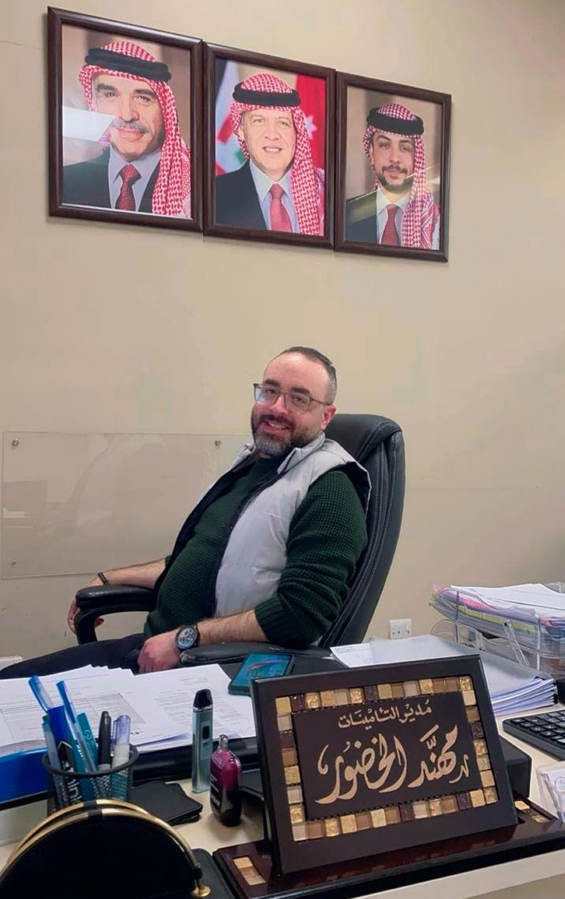

فهرس توثيقي للتحليلات التنظيمية، المذكرات الإدارية، وسجلات التقييم الإداري
منصة توثيقية مخصصة لأرشفة الفهارس والمراجع التنظيمية. ترتكز خلفية العمل على مجالات التنظيم والإدارة، التقييم الإداري والطبي، وإدارة المخاطر والتأمينات في القطاعين العام والخاص، مع التركيز على التحليل المباشر للسياسات الإدارية والتحليل التنظيمي.